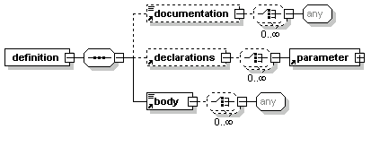
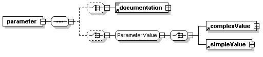

You define DCI templates with the template:definition. In the template you specify a set of parameters inside a template:declarations element.

In a template:declarations element parameter values can be expressed in either a template:simpleValue or a template:complexValue element. Simple values can contain character data only; complex values can contain both character data and pipeline markup. Alternatively, you can use the value attribute to define the value type.
The use attribute specifies whether a parameter is optional or required. If a parameter is required, it is invalid to also define a value in the default attribute; an error will occur if a author does not provide a value. If a parameter is optional it must have a default value, specified either through the default attribute or the body content of the element.

<template:definition>
<template:declarations>
<template:parameter name="page_title" type="complex"
expressionVariable="PAGE_TITLE" use="required" />
<template:parameter name="page_content" type="complex" use="optional" />
<template:parameter name="page_layout" type="simple"
expressionVariable="PAGE_LAYOUT" use="required" />
<template:parameter name="cache_key" type="simple"
expressionVariable="CACHE_KEY" use="required" />
</template:declarations>
...
</template:definition>
The template:body element defines the structure of the resulting document in an open content model. You use template:value elements to refer to template parameters, and can include pipeline operations.
You can refer to multiple templates within the body of a template definition, but you can't define other templates in the body.
<template:definition>
...
<template:body>
<canvas layoutName='%{$PAGE_LAYOUT}' theme="/home.mthm"
pageTitle='%{$PAGE_TITLE}'>
<pipeline:cache name="maincache" key='%{$CACHE_KEY}'>
<pipeline:cacheBody>
<urid:fetch href="copyright.xml"/>
<urid:fetch href="logo.xml"/>
<urid:fetch href="global_menu.xml"/>
<urid:fetch href="main_menu.xml" />
</pipeline:cacheBody>
</pipeline:cache>
<template:value ref="page_content" />
</canvas>
</template:body>
</template:definition>
You should document templates so that authors can make good use of them. The template:documentation element has an open content model.
Related topics
About templates